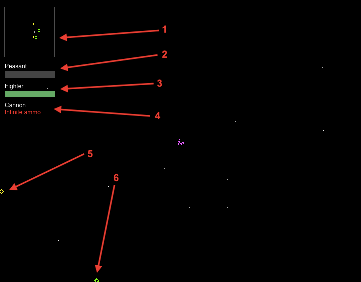

Celestial Combat 
Celestial Combat is a game of galactic conquest and colonization. Player controls
KEYBOARD........... ACTION.............
Escape key Save / load game
Left arrow key Turn left
Right arrow key Turn right
Up arrow key Accelerate
F Fire primary weapon
M Toggle galaxy radar display
. (>) Focus on next fighter spaceship
Spacebar Command menu
T Targeting: select next enemy nearby
GAMEPAD............ ACTION.............
Analog stick Set craft direction
Button 0 Fire primary weapon
Button 1 Special action (when docked)
Button 2 Accelerate
Button 3 Save / load game
HUD (Heads Up Display)
You can see vital information about the current situation in these regions of the
game screen:

(1) -- Galaxy radar is provided by friendly planets with Communications Centers. Markers indicate the positions of planets, stars, and spaceships: green, yellow, and other colors, respectively. You can press M or click on this small display to expand the display to fill your screen.
(2) -- Your rank is display along with current progress to next highest rank.
(3) -- Spaceship type and damage level
(4) -- Active weapon: if the weapon requires an ammo supply, it is shown as a tally underneath the weapon name
(5) -- Pointer to nearest star (yellow)
(6) -- Pointer to nearest planet (green)
A message log is shown at the bottom right corner of the HUD.
As the battle wages on, you will receive progress messages here from the parts of your faction's
war machine. Most recent messages are displayed at towards the top, leaving older messages to drop off below.
Game play
You begin with either an invasion fleet (1 x Fighter + 4 invasion Freighters) or
a single occupied planet.
To colonize planets, you must land on them when they are unoccupied with your
Fighter. The landing will plant a beacon, starting the flow of Freighters
and raw materials sent to construct facilities on the planet.
To win, you need to destroy all enemy production, combat facilities, and spacecraft.Landing on planets
Before colonization can begin, you must land on a planet to secure your colonization
beacon. Approach the planet at slow speed and rotate the craft to face outwards from
the planet's center. A landing speed indicator will be shown as you approach the planet.
Failing to correctly orient and slow the Fighter will destroy it on contact with the planet's
surface.
When you land on a friendly planet, your weapons will be rearmed and your ship repaired.
Note: you cannot land on stars. Fighters are affected by gravity from both planets and stars. Landing on a friendly spaceport
Much like landing on a planet, you must approach the spaceport slowly and aim for the center of
the spaceport to trigger the docking sequence. Once this is achieved, the spaceport will
catch your fighter craft. Rearming and repairing aboard the spaceport is much faster than on a planet surface.Weapons
Cannon
The standard energy weapon supplied by the same power plant that drives
a spacecraft's propulsion system.
Damage: 1 per hit
Heavy Cannon
Focusing the emitters of the standard cannon allowed us to create a weapon that
delivers twice the energy per projectile.
Damage: 2 per hit
Cluster Rocket
Packed with explosive shells, this unguided rocket can deliver a bundle of 20
to the recipient for maximum destruction.
Damage: 1 per hit x 20 shells + 0.5 impact damage
Homing Missile
We have refined a biological seeking intelligence
that is installed into every mass-produced homing missile: a highly destructive weapon.
Ensure your targeting system has locked onto an enemy before firing.
Damage: 6 per hitLaser Bolt
Fast discharge ultra-capacitors have enabled our technicians to build a devastating laser weapon
into a small space.
Damage: 30 per hit, ranged Units
Fighter

The backbone of an offensive fighting force is the standard GHX-12 Fighter
craft armed with a rapid-fire cannon. Fighters can lay claim to unoccupied
planets.
Speed ||||||||||
Firepower |||||||...
Armor |||.......
Storage |.........
Freighter
Transport for raw and finished materials is provided primarily by Freighters.
They carry the capability to speed up construction of essential
fortifications and facilities. Freighters are the only craft capable of constructing
a Planetary Base (PBase).
Speed ||........
Firepower |||.......
Armor ||||......
Storage ||||||||||
Scout

Scout ships can attach themselves to the surface of a planet and act as a static defense garrison.
They are used primarily to enforce claims on a hostile planet. Weak individually, fleets of these
ships are deadly en masse.
Speed |.........
Firepower |.........
Armor |.........
Storage ..........
Facilities

A typical planet with a full complement of facilities.PBase

A Planetary Base (PBase) provides a planet with basic production and mining operations.
It can harvest and store raw materials on the planet. It can construct a Communications
Center and a Planetary Lab. It also provides defensive weapons, allowing the planet to
defend itself from attackers.
Speed ..........
Firepower |||||.....
Armor ||||||||..
Storage ||||......
PColony

A Planetary Colony (PColony) is the most efficient way for a planet to produce finished
materials from raw materials. It can construct spacecraft and other facilities; its operation
is critical to the maintenance demands of a planet.
Speed ..........
Firepower ..........
Armor |||.......
Storage |||||||...
PComm

Galactic scanners installed in the Planetary Communications (PComm) allow
empires to track precise locations of other worlds. A galactic radar display is
active when your faction owns at least one functional PComm.
Speed ..........
Firepower ..........
Armor ||........
Storage ..........
PLab

Weapons technology research and new weapon installation is carried out from the
Planetary Lab.
Speed ..........
Firepower ..........
Armor |.........
Storage ||........
Spaceport, SpaceDock, SensorArray
The orbital Spaceport and its facilities allow the Fighter craft to be swiftly repaired and
rearmed. As it is the first point of defense for a planet, it is heavily armed and armored.
Speed |.........
Firepower ||||||....
Armor |||||||...
Storage ||||......
Acknowledgements
Gameplay inspired by Gravity Well v2.2, the planetary
conquest game by David H. Hoeft of Software Engineering Inc. Celestial Combat owes its existence to this
classic 1995 masterpiece.